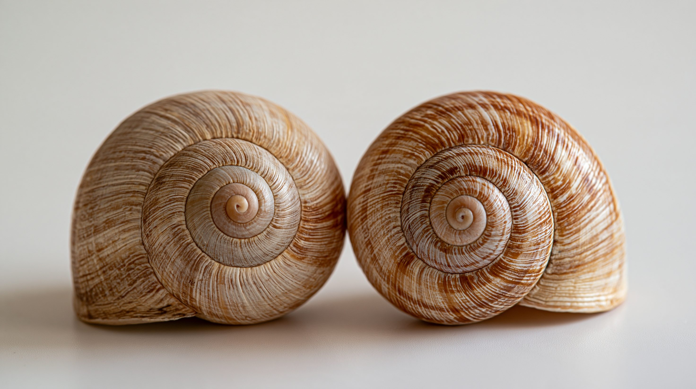
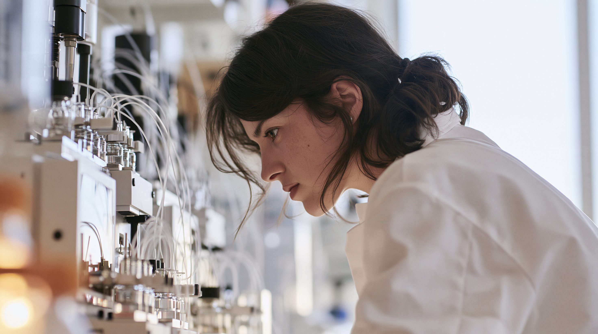
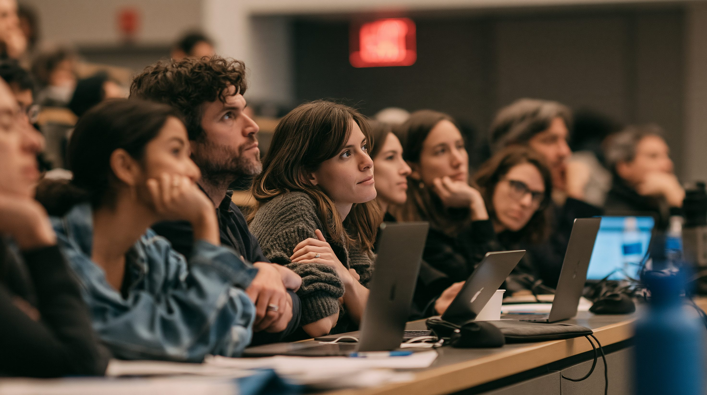

01論点 — 左右が逆の生物は、なぜ警戒されるのか
右手と左手は、形がそっくりなのに、重ね合わせることができない。右手用の手袋を左手にはめられないのは、このためだ。
分子にも、同じ関係をもつものがある。形は同じなのに重ならない2つの型があり、互いを「鏡像」と呼ぶ。この性質をキラリティー（左右性）という。19世紀にフランスのパスツールが見つけた。
生命は、この2つの型のうち、ほぼ片方しか使わない。タンパク質の材料であるアミノ酸はL型（左手型）、DNAやRNAの材料になる糖はD型（右手型）が中心である。なぜ片方に決まったのかは、いまも分かっていない。
左右をすべて逆にした分子を鏡像分子という。その鏡像分子だけでできた、自己増殖する生物が鏡の生命（鏡像生命）である。自然界には存在せず、作る研究もまだ成功していない。
- キラリティー（左右性）
- 形は同じなのに、鏡に映した姿とは重ならない性質。分子にも見られる。
- 鏡像分子
- ある分子の、左右を逆にした分子。アミノ酸や糖などで作ることができる。
- 鏡の生命（鏡像生命）
- 体の分子がすべて鏡像で、自分で増える生物。「鏡像の部品」と区別して使われる。
- 免疫
- 体に入った病原体を見つけて排除する仕組み。病原体の分子の形を見分けて働く。
- ファージ
- 細菌にだけ感染するウイルス。自然界で細菌の数を抑えている。
問題は、生き物を守る仕組みの多くが、分子の左右を手がかりにしていることだ。免疫は、病原体の分子の形を見分けて働く。細菌に感染するファージや、細菌を食べる微生物も、細菌の分子の形を頼りに攻撃する。左右が逆の細菌には、これらがうまく働かない恐れがある。免疫もファージなどの天敵も働きにくい細菌が広がれば、人や動植物、生態系に取り返しのつかない被害が出るかもしれない。
一方で、鏡像分子そのものには役に立つ面がある。体内の酵素は左右を見分けて分子を分解するため、鏡像の分子は分解されにくく、薬が長持ちする。鏡像のアミノ酸を使った薬は、すでに市販されている。
鏡の生命を作れる技術が整う前に、研究を止められるのか。薬などに役立つ研究と、生態系を壊しかねない研究を、誰が、どこで線引きするのか。

02タイムライン — 警告の前と後で、何が起きたか
鏡像の部品を作る研究は、10年以上前から進んでいた。転機は2024年末の警告で、その後の約2年に、会議が開かれ、提言や研究費の取り決めが相次いだ。
フランスのパスツールが、結晶の観察から、同じ成分なのに鏡像の関係にある2つの型が存在することを見つけた。生命が片方の型しか使わない、という謎の出発点になった。
中国の清華大学のチームが、鏡像のアミノ酸だけでできたDNA複製酵素を化学合成した。ティン・ジュ氏らの成果である。12塩基の鏡像DNAを18塩基に伸ばすのに約4時間かかる遅いものだったが、通常の分子と同じ試験管の中で、互いに干渉せずに働いた。
アメリカの国立科学財団が、鏡の細胞を作れるかを調べる研究に、4人の研究者へ計400万ドルを助成した。その一人がケイト・アダマラ氏で、のちに警告論文の著者に加わる。同氏は、危険を知って自分の研究をやめたと伝えられている。
科学誌Scienceに、科学者38人の連名の論文が載った。ノーベル賞受賞者のグレッグ・ウィンター氏とジャック・ショスタク氏も含まれる。鏡の細菌は免疫を回避し、天敵にも食べられにくい恐れがあるとして、鏡の細菌を作ることを目的とする研究は認めるべきでないと訴えた。研究費を出す側にも、支援しないと明言するよう求めた。約300ページの技術報告も同時に公開された。
英国政府の首席科学顧問が議長を務める専門家の円卓会議が、1月22日に開かれた。会議のメモは、鏡像の部品と、自己増殖する鏡の細胞を分けて扱うことを提案した。政府の方針ではなく、参加者の意見をまとめたものである。
パスツール研究所が、鏡の生命をめぐる一連の国際会合の第1回として、パリで会議を開いた。合成生物学、免疫学、生態学、倫理の専門家や政策担当者、研究費を出す側が参加した。結論は、リスクが大きく利益は限られるので、鏡の生物は作るべきでないというものだった。この会議は、1975年に遺伝子組み換え研究のルールを決めたアシロマ会議になぞらえて報じられた。
ドイツの中央生物安全委員会が、2024年の指摘を支持する見解を出した。ユネスコの国際生命倫理委員会は、予防的な世界的モラトリアム（一時停止）を勧告した。英国研究・イノベーション機構は10月16日、悪用の恐れがある研究の指針に鏡像生物学を加えた。民間の研究財団ルネサンス・フィランソロピーは11月18日、鏡の生物を作る研究には資金を出さないと表明した。
国連事務総長の科学諮問委員会が政策提言を公表した。鏡像分子のリスクは低いが、自己増殖する鏡の生命のリスクは極めて高いとし、世界的な議論の場の設置と、越えてはならない線の設定を求めた。
スペインのポンペウ・ファブラ大学のリカール・ソレ氏らが、鏡の生物は栄養の取り込みや競争で不利になり、自然界に広がる可能性は低いとするモデル研究を公開した（査読前の論文）。これに対し、2024年の論文の著者らは、天敵から逃れられる利点を過小評価していると反論している。
科学誌Bulletin of the Atomic Scientistsの論説は、警告から2年近くたっても、新しい規制も国際的な監督機関もないと指摘した。シンガポールでも2026年秋に国際会議が計画されていたが、本稿の執筆時点で結果は確認できていない。

035つの視点 — 止める側、進める側、見極める側
鏡の生命をめぐる議論は、「作るか、作らないか」だけでは割り切れない。いつ止めるのか、どこまで止めるのか、誰が止めるのかで、立場が分かれる。各国の政府が公式な立場を表明している例は少なく、ここでは立場ごとに5つに整理した。それぞれの言い分のまま並べる。
| 立場 | 基本スタンス | 主な主張 | 最大の関心事 |
|---|---|---|---|
| 警告した科学者 | 強く警戒 | 利益は小さくリスクは大きい。作る研究はやめるべき | 作らないという共通の線 |
| 区別と慎重な進め方を求める研究者 | 事前の禁止には慎重 | 部品の研究と生物づくりは別。将来のリスクで今の研究を止めない | 部品の研究の継続 |
| 生態学の面から疑う研究者 | 懐疑的 | 餌を取り込めず、自然界では広がりにくい | 想定の検証 |
| 国際機関・政府機関 | 予防的に関与 | 実現前に議論の場と越えてはならない線を決める | 国境を越えた枠組み |
| 研究費を出す側 | 資金で線を引く | 資金を出さないと決めて、研究の流れを変える | 別の資金源に移れない状態 |

04データ・統計 — 部品はどこまで作られ、何に使われているか
鏡の生命にはまだ実体がなく、公表されている数字の多くは専門家の見積もりである。ここでは、鏡の生命に至るまでの節目と、すでに使われている鏡像分子を整理する。
鏡の生命に至るまでの4つの節目
-
鏡像リボソームタンパク質を作る細胞内の装置。これが作れれば、鏡像のタンパク質を生物のしくみで作れるようになる。
-
部品がすべて分かっている人工細胞細胞が生きるのに必要な部品を全部特定し、組み上げた人工の細胞。
-
鏡像ゲノム生物の設計図にあたる、鏡像のDNA全体。
-
自己維持できるPURE系（試験管内のタンパク質合成の仕組み）精製した部品を試験管で混ぜ、タンパク質を作らせる仕組み。その部品まで自分で作れるようになると、自己増殖に近づく。
2025年6月にパスツール研究所が開いた国際会議が整理した節目。鏡像リボソームを作ることを、越えてはならない線とすべきかは、参加者の意見が割れた。会議の時点で、鏡像のリボソームや細胞内部の環境を再現できた研究室はなかった。出典：Bulletin of the Atomic Scientists（2026年8月）、パスツール研究所
鏡像分子の使い道（すでに実用・研究中）
-
鏡像のアミノ酸を含む薬デガレリクスとジフェリケファリンがすでに市販されている。体の酵素に分解されにくい。
-
鏡像の核酸「シュピーゲルマー」L型の糖でできた核酸。分解酵素に強く、抗体の代わりになる薬として、企業が臨床試験を進めている。
-
鏡像ペプチドの探索鏡像のペプチドは、体の中で分解されにくく、薬の候補になる。ただし、鏡像のペプチドを大量に作って、効くものを探すことは難しい。そこで、まず標的のタンパク質のほうを鏡像にして作り、普通のペプチドの中から、その鏡像にくっつくものを選ぶ。選んだペプチドを鏡像に作り直すと、本物の標的にくっつく鏡像ペプチドになる。標的とペプチドの両方を鏡に映せば、くっつく関係はそのまま保たれるからだ。がんに効くペプチドの探索などで、研究が進んでいる。
-
材料・データ保存丈夫な材料、光や磁気に関わる素材、DNAによるデータ保存などが、応用の候補に挙がっている。
いずれも鏡像の部品を化学合成で作るもので、鏡の生物は必要としない。出典：パスツール研究所、英国政府科学室、王立生物学会、企業の公表資料
注目の数字
05深掘り — 線は、どこに引かれるのか
※ ここから先は、ここまでの事実にもとづく筆者個人の見解です。
鏡の生命は、まだ誰も作っていない。そのため、作った場合の被害を実験で確かめることはできない。一方で、鏡の生物を作らないと決めても、いま失われる利益は小さい。研究者たちが先に立ち止まったのは、起きてからでは取り返しがつかない種類のリスクだったからである。部品の研究は薬や材料に役立つので、止めるべきものと続けるべきものを見分ける作業が、これからのルール作りの中心になる。実現が10年より早まれば、決める時間はさらに短くなるかもしれない。